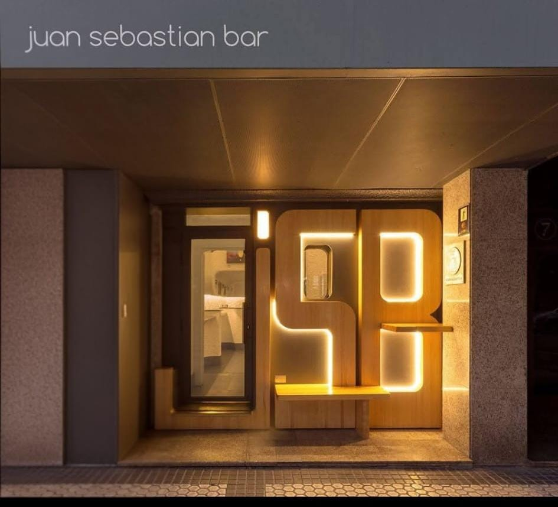
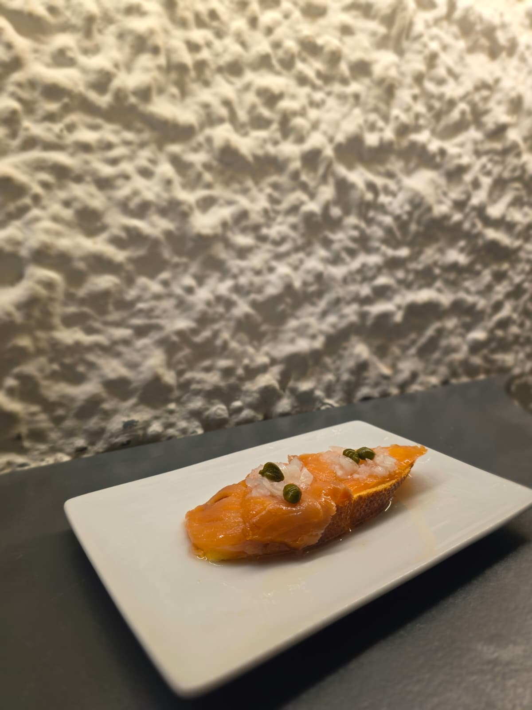
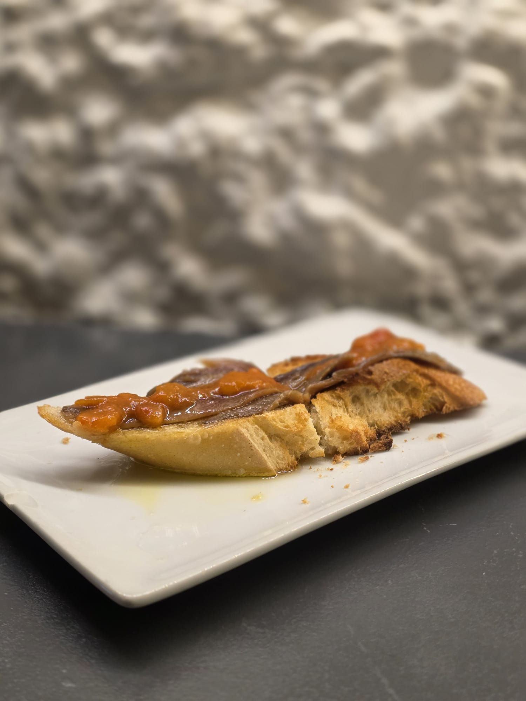
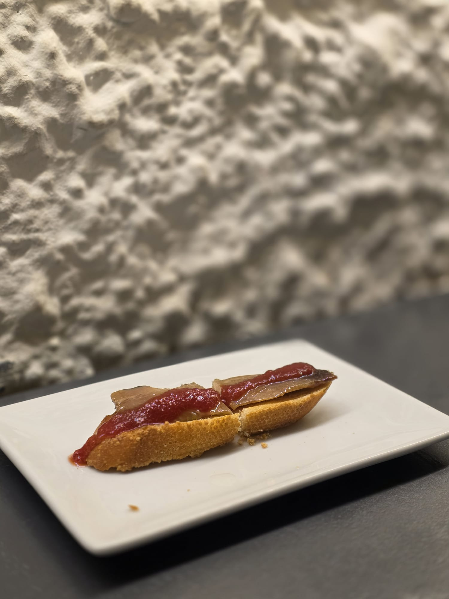
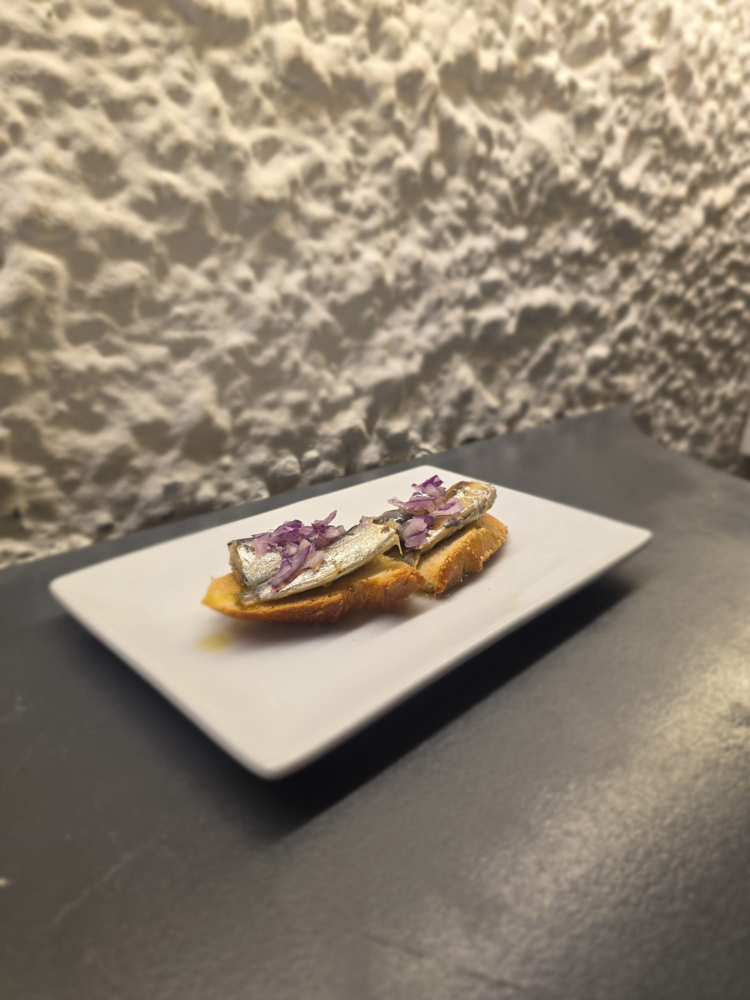
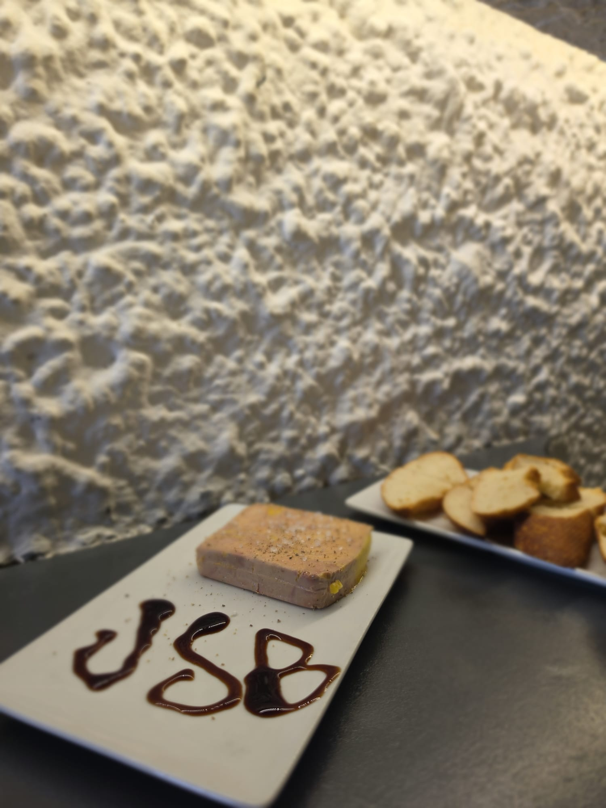
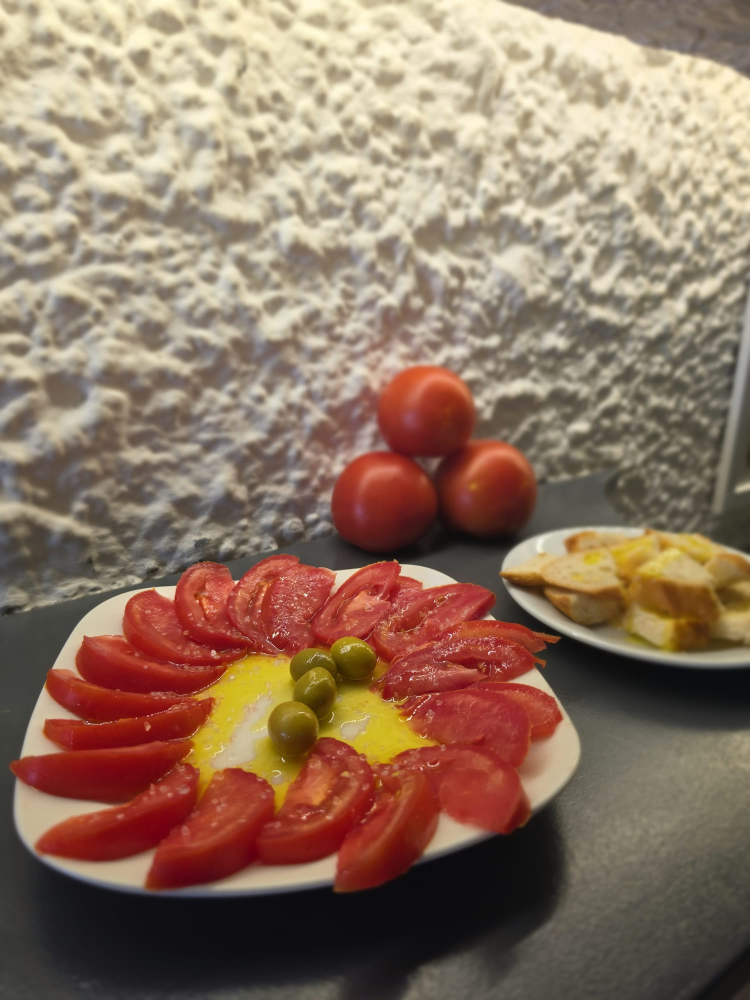
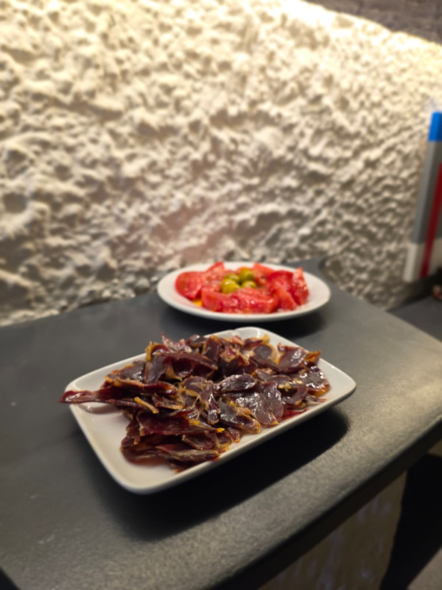
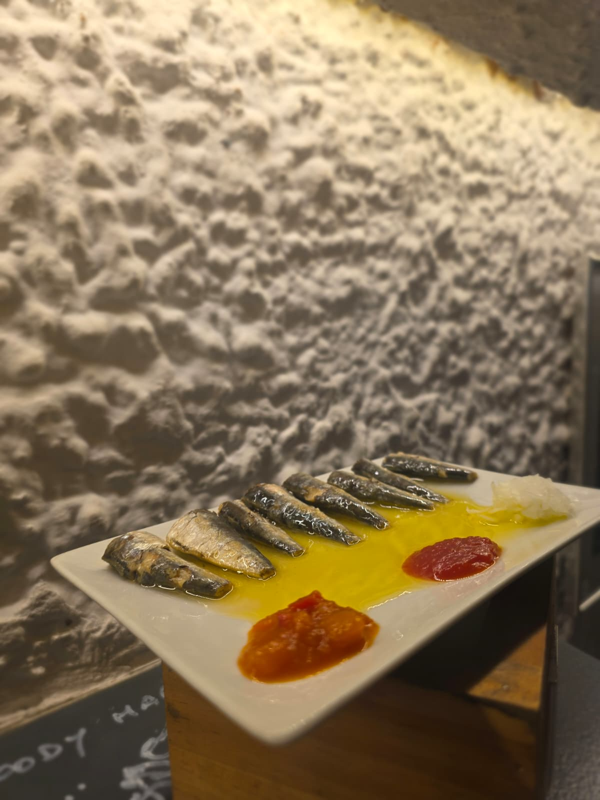
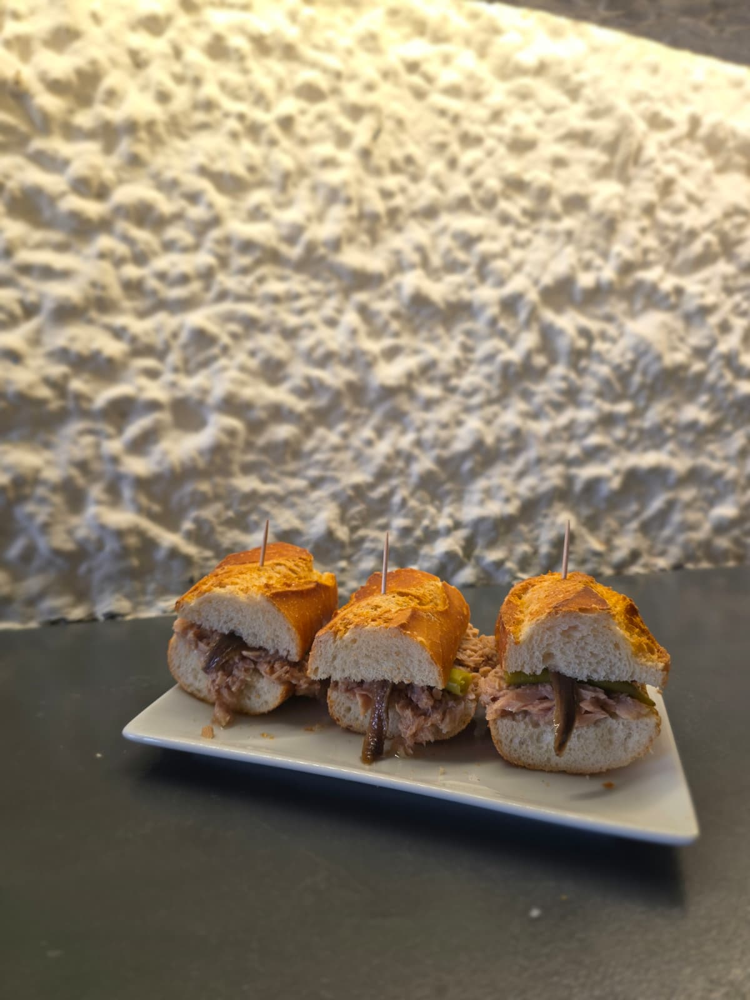

Tradición, Madera & Buen Ambiente

El Juan Sebastián Bar, en la calle Easo nº 7, es uno de los bares más emblemáticos de Donostia. Fue diseñado originalmente en 1977 por el reconocido arquitecto Enrique Sarabia, conservando un característico aire setentero combinado con matices de estilo ibicenco que marcaron una época en la ciudad.
Con el paso de los años, el local exigía una restauración respetuosa. Tuvimos claro que el Juan Sebastián Bar no debía reabrirse si era para perder su identidad, sino recuperarse. Tras la restauración de su fachada e interiores, devolvemos al JSB su brillo original: un punto de encuentro cálido donde la tradición hostelera donostiarra se fusiona con una barra cuidada al detalle.









En el Juan Sebastián Bar no solo nos apasiona la buena gastronomía, sino también el arte y la cultura. Nuestro espacio acoge periódicamente exposiciones de arte, muestras fotográficas y eventos culturales locales.
Calle Easo nº 7, 20006
Donostia - San Sebastián, Gipuzkoa
Lunes a jueves: 12:00 a 15:30 y de 18:30 a 23:00
Viernes y Sábados: 12:00 a 15:30 y de 18:30 a 1:20
Domingo: 12:00 a 15:00